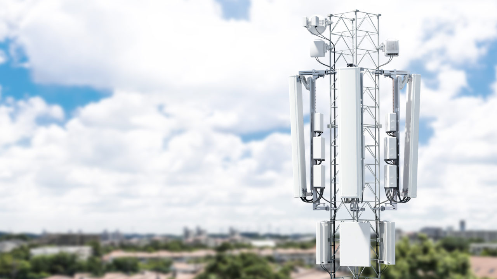
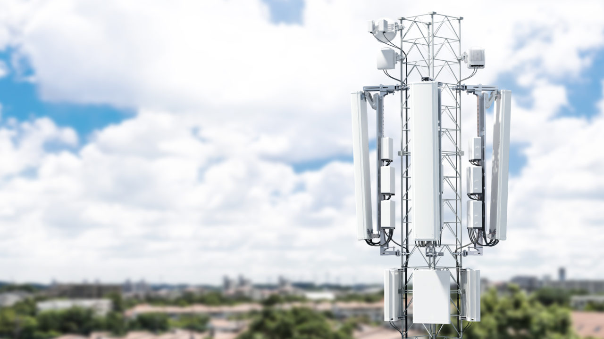
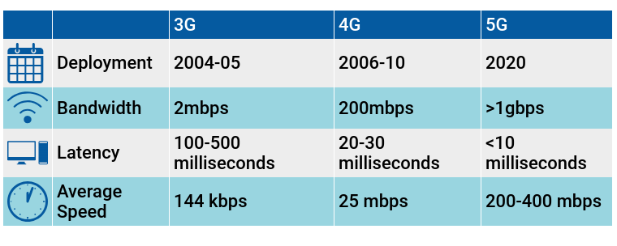

HOME
Welcome to My Website
Here is my Reaserch on 5G technology and its application in Emerging technologies
5G Technology
Applications of 5G
How 5G Works
The fifth-generation wireless system (or 5G for short) is now the next generation of wireless communication systems. It is the next major phase of mobile telecommunications
standards.
5G moves us beyond networks design for mobile devices alone toward systems that connect different types of devices operating at high speeds.
 

*The rollout of 5G will provide benefits in three major areas, also known as the “5G triangle”:
- uRLLC: Ultra Reliable Low Latency Communication use cases
- mMTC: Massive Machine Type Communication (IoT) use cases
- eMBB: Enhanced Mobile Broadband – high speed use cases
A look at the new 5G technology
What is 5G? 5G represents a new stage in the evolution of mobile communications. Above all,
it will revolutionize mobile data transfer by providing higher capacities within individual mobile radio cells.
The new features of 5G are not limited to enabling better use of mobile data, however. The 5G network also offers
a range of other possibilities.
5G is the answer to increasing data traffic
Data traffic continues to grow unceasingly around the world. Network operators face the immense challenge of meeting demand for fast, ubiquitous data links by providing faster,
larger wireless networks.
Now that people around the world are connected as standard, we are taking the next step into the future: Communications are expanding to include machines and devices,
connected in the Internet of Things.
Many services will focus on the requirements of industry, for example. Production processes will be automated.
Innovative applications like smart home technology and entertainment solutions based on virtual reality will make our private lives more convenient and safer.
5G technology is the foundation for this, opening up near-infinite possibilities for new uses. This means formulating a single definition of 5G isn't easy. 5G is indisputably the network of the future – it can do a whole lot more than just digital telephony and wireless Internet.
The difference between 4G and 5G
The current mobile communications standard is known as Long Term Evolution (LTE). With its network coverage and speed,
this technology covers nearly all consumer needs and offers a sufficient data rate for a variety of everyday applications,
such as mobile streaming of sports content or exchanging data over messenger apps.

Flexible provision of network infrastructure
5G will set new standards. It will meet future requirements for data speed, network capacity, latency, and data security.
With 5G, numerous network layers will be able to serve different applications in parallel, for example, for industry customers.
Every application will receive its own suitable layer. The technology of dividing the network into individual layers is called network slicing.
It is based on technologies such as network functions virtualization (NFV) and software-defined networks (SDN).
The flexibility these technologies provide will make it possible to combine real network capacities to create virtual network sectors on demand, opening up the possibility of customer-specific solutions.